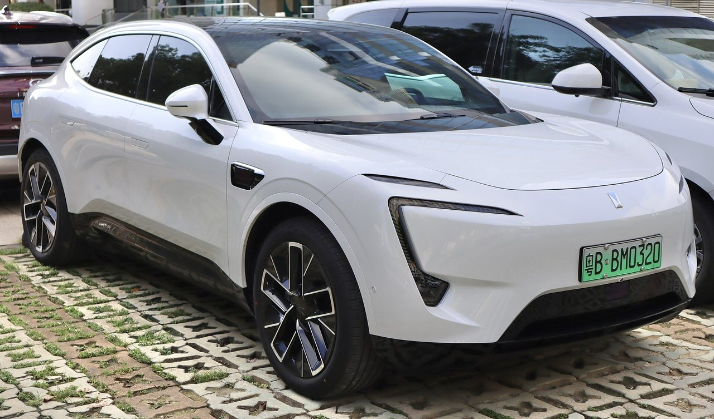

Камери огляду
Включно з задньою камерою, що замінює скло — окремими вузлами по VIN.
Запчастини з Китаю під замовлення
Седан без заднього скла: огляд назад — тільки через камеру. Тут електроніка критична навіть там, де у звичайних авто просто скло. Підбираємо по VIN.
У 12-го немає заднього скла — замість нього камера і екран, тому стан камер тут не комфорт, а безпека. Низький силует означає ризики для передньої губи і порогів, а сенсори Huawei ADS розкидані по кузову, як і в 11-го. Кожну позицію звіряємо по VIN під вашу комплектацію.

Включно з задньою камерою, що замінює скло — окремими вузлами по VIN.
Низький седан: передня губа і накладки порогів страждають першими.
Окремі вузли з кронштейнами під конкретну версію системи.
Тонка світлотехніка спереду і наскрізний ліхтар ззаду — по VIN.
Амортизатори, важелі, стійки стабілізатора для важкого седана.
Опишіть симптом своїми словами — менеджер підкаже, яка деталь зазвичай потрібна, і перевірить по VIN.
Тут це не дрібниця — їздити без неї некомфортно і небезпечно. Привеземо вузол швидко, авіа.
Типово для низького седана. Покажемо оригінал і варіанти з різницею в ціні.
Розберемо по фото, що пошкоджено: пластик, кронштейн чи сенсор ADS.
Стійки і важелі комплектом на вісь — вигідніше по доставці.
Авіа — від $15,5/кг (від 30 кг — від $11,3/кг), море — від $5,6/кг (від 30 кг — від $2,5/кг). Ціна включає доставку і розмитнення, фіксується до оплати. Точну вартість конкретної деталі менеджер підтверджує після перевірки VIN — до 30 хвилин у робочий час.
Модель, VIN і що потрібно — формою, у Telegram або телефоном.
Звіряємо артикул і комплектацію у каталогах дилера в Китаї.
Авіа чи море, строк і фінальна сума «під ключ» — до оплати.
Фотозвіт перед відправкою, трек-номер і статуси до отримання.
В Avatr 12 камери — це дзеркала і заднє скло одночасно. Якщо щось із оглядом не так — надішліть VIN і фото у Telegram, підберемо вузол за день.
Так, привозимо камеру окремим вузлом під вашу комплектацію. Це авіа-позиція — їде швидко.
Залежить від версії і матеріалу. Менеджер дасть ціну «під ключ» після перевірки VIN — до 30 хвилин у робочий час.
Платформа і частина ходової. Кузов, оптика і скло — різні. VIN дає точну відповідь по кожній позиції.
Так, лідари, радари і камери — окремими вузлами з кронштейнами, з перевіркою версії системи.